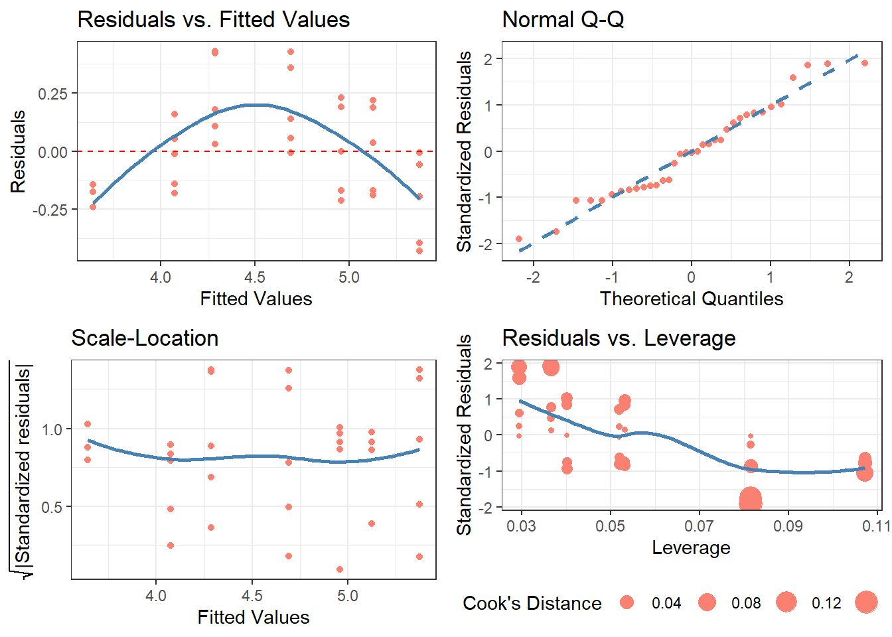

3 The *diagnose() Functions
3.1 diagnose() and ggdiagnose()
The functions diagnose() and ggdiagnose() provide alternatives for the plot(model.object) approach. The Q-Q, Scale-Location, and Residuals-vs.-Leverage plots in the latter method can present difficulties in interpretations. For example, Cook’s Distance typically is not taught at the secondary and undergraduate levels–when it is, teachers will forego explanation of the math due to its complexity and instead focus solely on the interpretation, leaving students in the dark on how the statistic works. If the goal is to maximize students’ comprehension of detecting heteroskedasticity, one option is to replace the three previously mentioned graphs with histograms and an addition of another variable: residuals as a percentage of the values for the dependent variable (i.e. (residuals ÷ actual values)*100).
Thinking of residuals in terms of percent differences can help determine their magnitude. For example, if you notice an outlier in the residuals having the value of “5”, does this issue necessitate a re-estimation of the model that excludes this observation? A common method is to examine the (adjusted) R-squared before-and-after the outlier exclusion. The problem of “mining” the model occurs, however, and heightens the risk of a Type 1 Error (i.e. false positive). One solution, then, is to confirm whether this extremity is substantively different from the rest of the values–you may, based on prior knowledge, decide whether thresholds of 10% or 15% should be marked as such.
Overall, with these functions, students will learn how to visualize homoskedasticity/heteroskedasticity and the magnitude of outliers based on familiar concepts as opposed to being inundated with hastily-taught new ones that assume a sufficient understanding of linear algebra.
3.1.1 diagnose()
3.2 cdiagnose()
For those who prefer it, I also present a “classic” version of the original base R residual diagnostics plot: cdiagnose(), a recreation of plot(model.object) with ggplot2 graphics. The Residuals vs. Leverage graph is the most differentiated one from the original, using the size of the points to indicate the degree of Cook’s Distance (as inspired by Raju Rimal’s diagPlot(): https://rpubs.com/therimalaya/43190).
Because base R’s plotting of model objects do not include NLM/NLS objects, neither does cdiagnose(), which is justified considering the linear algebra involved in leverage and Cook’s Distance. Nonetheless, future work will consider an alternative for non-linear models.
# OLS case
model.lm <- lm(data = Orange, formula = log(circumference) ~ age)
cdiagnose(model.lm,
fit_type = 'response',
residual_type = 'response',
se = FALSE,
alpha = 1)